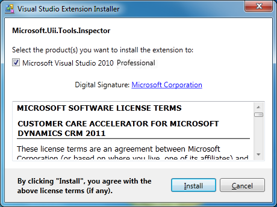
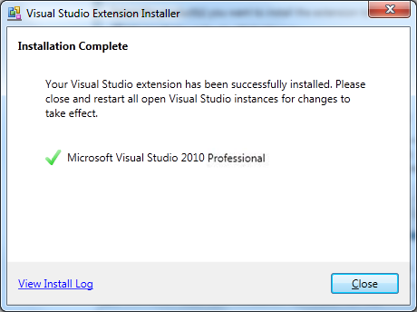

The HAT Software Factory is not installed by the installer. You have to manually install it. The HAT toolbox simplifies integrating applications and automating applications.
To install the HAT Software Factory Visual Studio 2010 toolbox
- Double-click the Microsoft.Uii.Tools.Inspector.vsix setup file to start the installation. By default, the file is available in the following location: [Install Directory]\Microsoft Uii\HAT Software Factory VS 2010
- The Visual Studio Extension Installer starts, as shown in the following illustration. Click Install.

- When the installation is finished, the InstallationComplete dialog box appears. Click Close.

 Note: Note: |
|---|
| The menu items in Microsoft Visual Studio 2010 solution appear only once the template unfolds. Hence, first time users need to create a new UII project and then import the solution. This new project can be deleted later on, if required. |
|
Note: |
|---|
| For example, the first time you create a blank project in Microsoft Visual Studio 2010, the import menu item is not available as shown in the following illustration. |